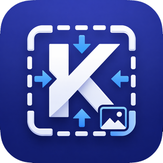
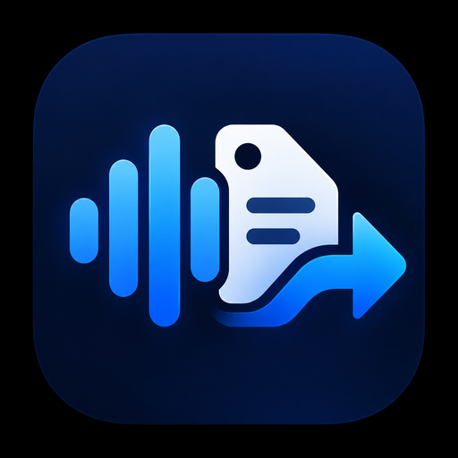
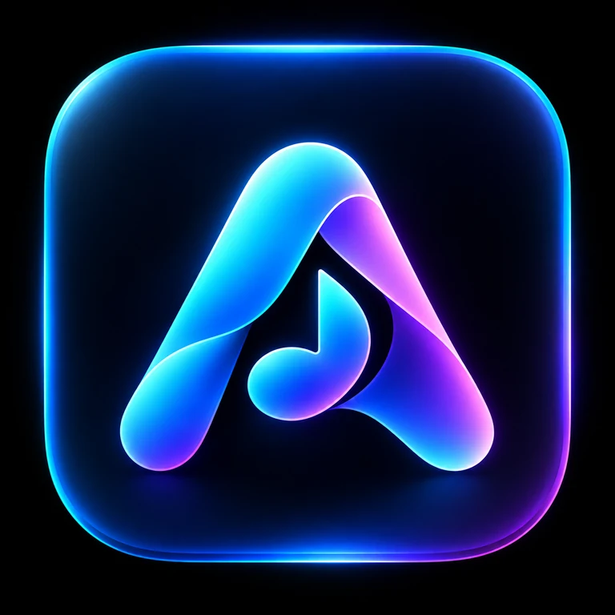

Small software.
Specific jobs.
Sanat Utility Studio builds focused tools for health, media, productivity and everyday digital work. Each product starts with one useful job and stays close to it.
Products
One studio.
Different jobs.
Mobile utilities, creator tools and desktop software, each with its own visual identity and a shared focus on practical use.

KiloPicResize and compress imagesAndroidLive→ 03Formal Letter MakerStructured formal letters and PDF exportAndroidLive→ 04
AudioPrep StudioConvert, tag and prepare audio releasesWindowsPrivate beta→ 05TB Restore StudioRestore, upscale and prepare archival videoWindowsBy request→ 06SRDAAI-assisted Windows development workflowWindowsBy request→ 07
APRIL MusicMusic playback and conversational interactionAndroidIn development→ 08Tripura PayCalcTripura government salary and arrears estimationAndroidClosed testing→Development journals, practical tutorials, developer tools and sourced updates across AI and technology are coming to the studio journal. Every article is reviewed before publication.
{% endif %}The studio
Independent by design.
Sanat Utility Studio is an independent software studio founded and developed by Sanat Debbarma. The catalogue spans health, productivity, media and development tools, without forcing every product into the same shape.
Contact
Support, licensing or collaboration.
For product support, private beta access, Windows software licensing, pricing or collaboration, contact Sanat Utility Studio directly.